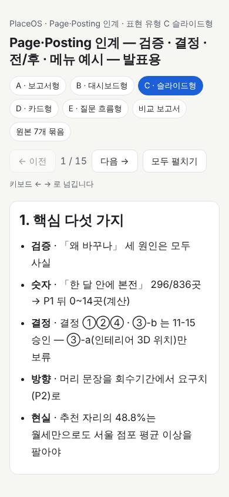
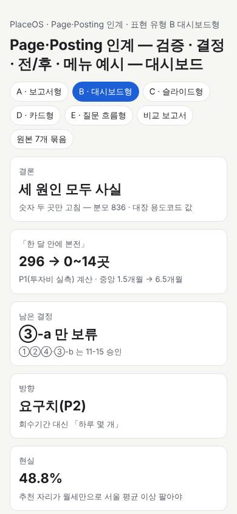
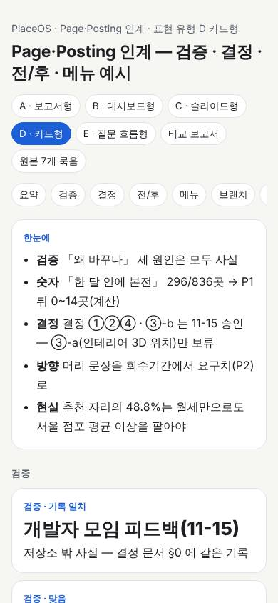
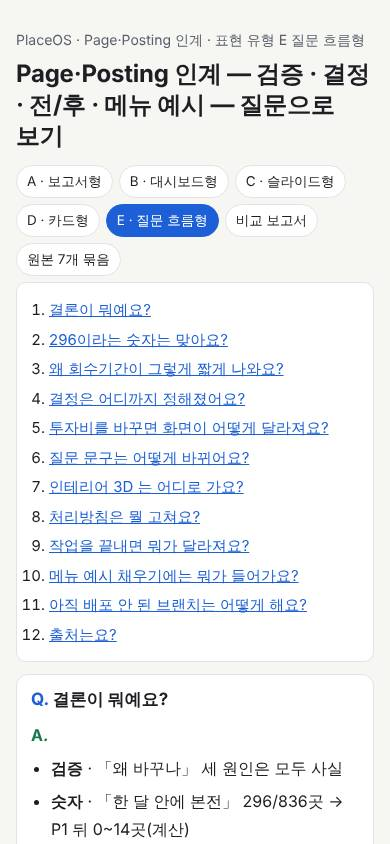
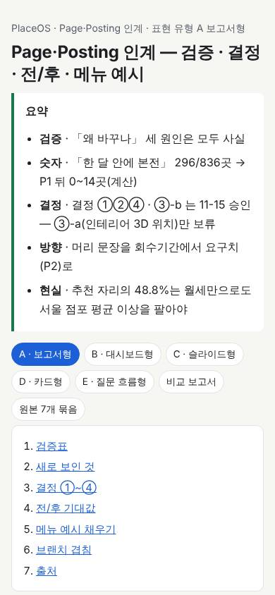

PlaceOS · Page·Posting 인계 예시 · 표현 유형 비교
같은 내용(검증 · 결정 ①~④ · 전/후 · 메뉴 예시)을 다섯 가지 방식으로 그리고, 같은 자동 검증으로 점수를 매겼습니다. 매시간 유형마다 한 번씩 고치고 다시 잽니다.
지금 1위: C 슬라이드형(100.0점) · 2위 B 대시보드형(96.2점). 점수는 자동 검증만으로 냈습니다 — 실제 독자 반응이 아니라, 같은 기준으로 잰 비교입니다.
| 유형 | 총점 | 완전성 /25 | 첫 화면 /20 | 탐색 비용 /15 | 모바일 /15 | 접근성 /15 | 안정성 /10 |
|---|---|---|---|---|---|---|---|
| 1위 · C 슬라이드형 | 100.0 | 25.0 | 20.0 | 15.0 | 15.0 | 15.0 | 10.0 |
| 2위 · B 대시보드형 | 96.2 | 25.0 | 20.0 | 13.9 | 12.5 | 14.8 | 10.0 |
| 3위 · D 카드형 | 93.2 | 25.0 | 20.0 | 8.8 | 14.7 | 14.8 | 10.0 |
| 4위 · E 질문 흐름형 | 90.7 | 25.0 | 14.0 | 14.8 | 12.0 | 14.8 | 10.0 |
| 5위 · A 보고서형 | 88.3 | 25.0 | 20.0 | 5.0 | 13.4 | 14.8 | 10.0 |
| 라운드 | A 보고서형 | B 대시보드형 | C 슬라이드형 | D 카드형 | E 질문 흐름형 |
|---|---|---|---|---|---|
| r0 2026-11-17 08:45 UTC | 88.3 | 96.2 | 100.0 | 93.2 | 90.7 |

사실 25/25 · 첫 화면 핵심 폰 5/5 · PC 5/5 · 폰 1.2화면 · 펼치거나 넘겨야 보이는 블록 14 · 최소 글자 13.0px · 터치 대상 100% · 대비 100%/100%(라이트/다크) · 오류 0 · 46KB
강점 탐색 비용 · 첫 화면 · 접근성 · 완전성 · 안정성 · 모바일 · 약점 없음(모든 기준 만점)
검토 메모 1장 1메시지라 발표에 맞음. 끝까지 보려면 14번 넘겨야 하고, 슬라이드 높이 고정(520px)으로 PC에 빈 공간이 생김.
이번 라운드 개선 처음 만듦

사실 25/25 · 첫 화면 핵심 폰 5/5 · PC 5/5 · 폰 5.4화면 · 펼치거나 넘겨야 보이는 블록 7 · 최소 글자 12.5px · 터치 대상 50% · 대비 98%/98%(라이트/다크) · 오류 0 · 44KB
강점 첫 화면 · 완전성 · 안정성 · 약점 모바일
검토 메모 핵심 타일과 결정 보드로 한눈에 보임. PC 결정 보드의 긴 상태 칩이 카드 밖으로 넘치고, 세부 6칸은 눌러야 보이며 펼치기 버튼이 작음(터치 대상 50%).
이번 라운드 개선 처음 만듦

사실 25/25 · 첫 화면 핵심 폰 5/5 · PC 5/5 · 폰 13.5화면 · 펼치거나 넘겨야 보이는 블록 1 · 최소 글자 12.5px · 터치 대상 93% · 대비 97%/97%(라이트/다크) · 오류 0 · 40KB
강점 첫 화면 · 완전성 · 안정성 · 약점 탐색 비용
검토 메모 휴대폰 한 손 읽기에 좋음. 검증 카드의 큰 글씨가 긴 주장 문장이라 무겁고, 약 13.5화면.
이번 라운드 개선 처음 만듦

사실 25/25 · 첫 화면 핵심 폰 2/5 · PC 5/5 · 폰 2.3화면 · 펼치거나 넘겨야 보이는 블록 12 · 최소 글자 12.5px · 터치 대상 40% · 대비 98%/98%(라이트/다크) · 오류 0 · 45KB
강점 완전성 · 안정성 · 약점 첫 화면
검토 메모 독자 질문 순서가 자연스러움. 폰 첫 화면이 질문 목록 12줄로 차서 핵심 5개 중 2개만 보이고, 목록 링크가 작음(터치 대상 40%).
이번 라운드 개선 처음 만듦

사실 25/25 · 첫 화면 핵심 폰 5/5 · PC 5/5 · 폰 23.9화면 · 펼치거나 넘겨야 보이는 블록 1 · 최소 글자 11.4px · 터치 대상 88% · 대비 98%/98%(라이트/다크) · 오류 0 · 42KB
강점 첫 화면 · 완전성 · 안정성 · 약점 탐색 비용
검토 메모 요약이 첫 화면에 다 들어오고 근거가 가장 자세함. 폰에서 약 24화면이라 길고, 11px대 작은 글자가 있음.
이번 라운드 개선 처음 만듦
| 용도 | 유형 |
|---|---|
| 빨리 파악(첫 화면 + 탐색 비용) | C 슬라이드형 |
| 빠짐없이 근거까지(완전성 + 접근성 + 안정성) | C 슬라이드형 |
| 휴대폰으로(모바일 + 첫 화면) | C 슬라이드형 |
| 회의 발표 | C 슬라이드형(형식상 — 점수와 별개) |
원값: out/compare/metrics-<라운드>.json · 기록: out/compare/history.json · 다시 재기: python3 src/build.py && node src/harness.cjs . <라운드> && python3 src/report.py <라운드>